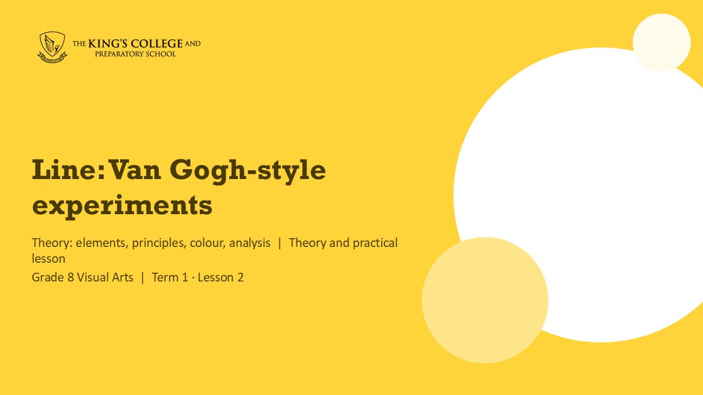

Term 1 · Lesson 2 · Theory and practical lesson
Line: Kinds of Line and What They Say
Start Here
Today I Will
- Today I will name five kinds of line and what each one communicates
- Today I will change line weight by changing pencil and pressure
- Today I will make a six-box line sampler in graphite in my visual journal
Zoom in on this sky. Is it calm or full of movement? Which lines make you feel that?
Words to Know
| Word | Meaning |
|---|---|
| Line | An element of art: a mark made by a moving point, longer than it is wide. |
| Contour line | A line that follows the edges of a form, both the outside edge and important edges inside it. |
| Implied line | A line that is not actually drawn but that the eye follows anyway, such as a row of stars. |
| Expressive line | A line whose quality (thick, thin, jagged, wavy, smooth) shows a feeling or energy. |
| Directional line | A line that leads your eye in a direction, for example up, around or across the picture. |
| Line weight | How thick or thin, dark or light a line is. Change the pressure to change the weight. |
Slides

Videos
Notes
The element of line: contour, implied, expressive, directional, line weight; how Van Gogh used line for energy. Watch: Lillian Gray on line (at home).
Lines That Speak
- Contour line: Follows the edge of a shape, like the outline of the hills.
- Implied line: Not drawn, but the eye follows it, like a row of stars or a pointing arm.
- Expressive line: Shows feeling: Van Gogh's swirls feel restless and alive.
- Directional line: Leads the eye: the cypress pulls us upward.
- Line weight: Thick, dark lines come forward and feel strong; thin, light lines feel soft and further away.
Van Gogh's Marks
- Short dashes: Many small strokes side by side, all following one direction.
- Swirls: Curves that spiral around a centre, pressing harder in some places.
- Flame-like strokes: Long, curving strokes that flicker upward like fire.
- Thick and thin: Press down for a thick, dark line; lift off for a thin, light one, all in one stroke.
Lines can whisper or shout: change the pressure and you change the feeling.
Practical
You need: Visual journal, HB, 2B, 4B and 6B pencils, eraser
Six-Box Van Gogh Line Sampler
- Rule six equal boxes on a journal page and number them 1 to 6.
- Box 1: rows of short dashes, all going the same way.
- Box 2: swirls with changing pressure, light to dark and back.
- Box 3: overlapping contour lines that make rolling hills.
- Box 4: thick-and-thin lines showing line weight (try all four pencils).
- Box 5: a flame-like cypress tree made of long curving strokes.
- Box 6: one big swirl that combines at least three of the marks above.
- Label each box underneath with the kind of line and the pencil you used.
- This page is assessed: it is line 1 (Line) of the Term 1 element pages rubric, marked out of 5 (six kinds of line in labelled boxes; line weight shown with pencil and pressure). Your teacher marks all seven element pages together after Lesson 8.
Term 1 Assessment issued: 'The Elements of Art' (video, due Friday of Week 4). Assessed later: element pages rubric, line 1 of 7 (Line, 5 marks; 35 for the rubric), counts for Term 1.
Test Yourself
- What is line weight, and how do you change it?
- What is the difference between a contour line and an implied line?
- Which kind of line did Van Gogh use to make the sky feel full of energy?
Show answers
1. How thick or thin, dark or light a line is; change the pressure or use a softer or harder pencil. 2. A contour line is drawn along an edge; an implied line is not drawn, but the eye follows it anyway. 3. Expressive, swirling, directional lines (short dashes and swirls).
Finished Early?
Show that the same tool can make calm, happy and angry lines.
- Draw a long strip of four boxes in your visual journal.
- Write one feeling under each box: calm, happy, nervous, angry.
- Fill each box with lines that show that feeling, using only your HB and 2B.
- Circle the box where changing the pressure made the biggest difference.